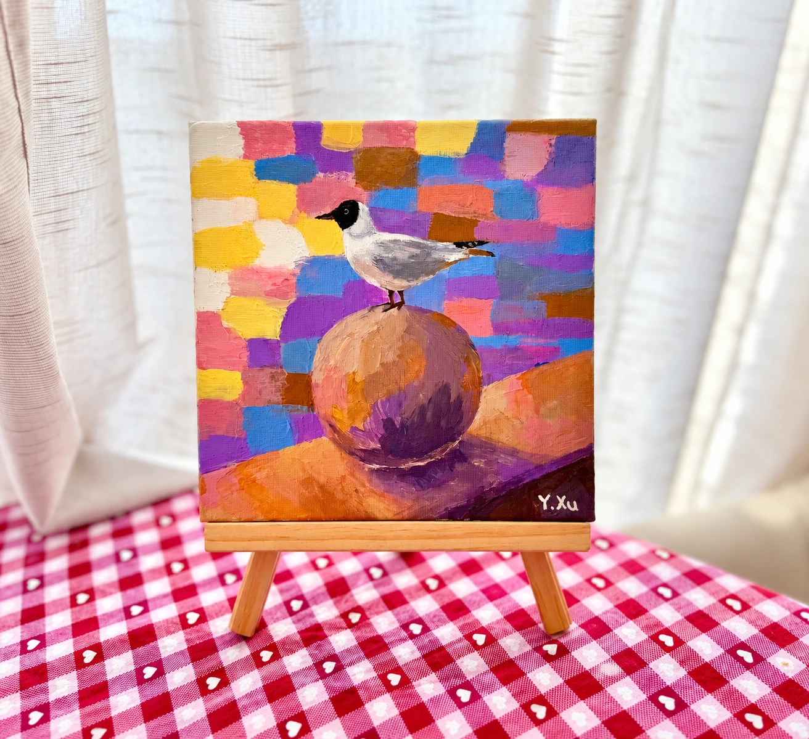

A Splash of the City

A Black-headed Gull (Chroicocephalus ridibundus) perches on a stone post by the shore, bringing a touch of life and colour to the cold geometry of the city. They are among our most familiar urban birds—sometimes stealing food, making noise, or leaving unwanted traces on statues and streets. Yet imagine the city without them: quieter, emptier, and somehow less alive. Their presence is a small but essential finishing touch to the urban landscape.
一点鸥气
一只红嘴鸥（Chroicocephalus ridibundus）停在海岸边的石墩上，为冰冷而规整的城市建筑增添了一抹生动的色彩。它们是城市里最常见的鸟之一，有时会争抢食物，也会在雕塑和街道上留下“不太受欢迎”的痕迹。但如果有一天，它们从城市中消失了，我们或许才会发现，那些熟悉的鸣叫、飞翔的身影和偶然的喧闹，原来一直是城市风景中不可缺少的点睛之笔。